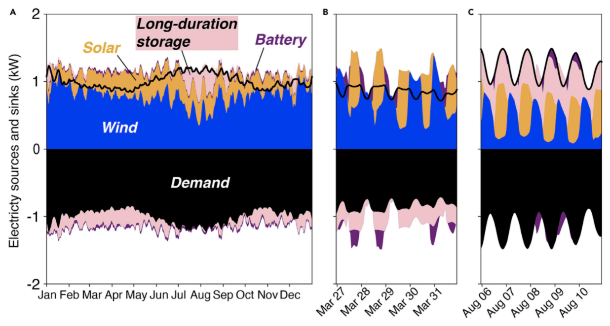

Multi-day / seasonal energy storage
Advances in batteries will allow us to cost-effectively solve the day-night problem of solar energy storage by storing 12 hours of electricity at low cost. But another energy storage challenge remains: Addressing seasonal variations in renewable power output.
Across most of the Earth, solar and wind vary not only by day/night, but by season. In northern countries, such as Germany, total output from a solar panel in January may be only one fifth of the output the same panel will produce in June. In addition, multi-day wind lulls are common in winter. To address this problem, the world will develop and deploy a number of multi-day or “seasonal” energy storage technologies.
Solar and wind variation by season drive need for multi-day, long-duration storage. Image courtesy of DOE.
Among the contenders are power-to-hydrogen, ultra-low-cost iron-air batteries, variations on pumped-hydro technology, and variations on storing energy as heat. These seasonal storage technologies will complement faster, shorter-acting batteries, and help stabilize the grid over the span of weeks, rather than hours.